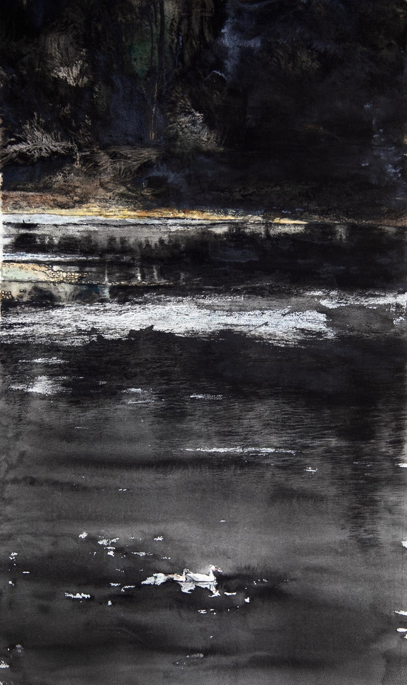

Companions
雎鸠伴游

- Artwork ID / 作品编号
- KW-W-000048
- Year / 年份
- 2022
- Medium / 媒介
- Watercolor on paper / 纸本水彩
- Dimensions / 尺寸
- 76 × 46 cm (H × W / 高 × 宽)
“Love Forever in the Landscape”depicts a quiet waterscape at dusk. A pair of waterbirds glide gently across the dark water while the distant woodland dissolves into shadow. A narrow band of light resting along the shore brings calmness and depth to the entire composition. Rather than telling a story, the painting reflects a quiet sense of companionship. Life is not always expressed through dramatic moments; more often, it unfolds through silent presence, shared time, and enduring connection. Mountains, water, trees, birds, and light exist as equals, together forming a balanced and harmonious whole. I believe every element in nature follows its own rhythm. What moves us is not grandeur, but the quiet relationships that continue to exist even in stillness. It captures love not through overt gestures, but through the enduring, harmonious connection within the landscape.
《雎鸠游伴》描绘的是暮色之中的水面。一对水鸟缓缓游过，远处树林沉入深色的光影之中，只有一抹微弱的光线停留在岸边，使整个空间显得安静而辽阔。 这幅作品呈现的是一种**无需言说的陪伴**。生命并不总是热烈绽放，更多时候是在宁静中彼此守望，在漫长的时间里共同生活。山、水、树木、飞鸟与光线并没有主次之分，它们共同构成一个和谐而完整的整体。 真正打动人的，往往不是壮阔的景象，而是在静默之中依然能够感受到生命之间**温柔而坚定的联系**。它没有直接描绘世俗意义上的热烈情感，而是通过自然的呼吸，展现出一种恒久、平等的共生关系。